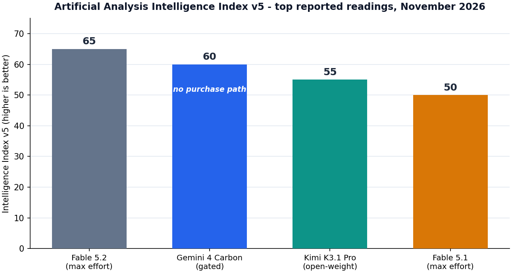

ENGINEERING DEEP DIVE
Gemini 4 Carbon: The Complete Deep Dive
The measured-but-unreleased frontier model - what a 60 on Intelligence Index v5 actually certifies, where Carbon beats the models you can buy, why the gate is still closed, and how to plan around a leaderboard slot you cannot purchase
Model: Gemini 4 Carbon (Google DeepMind) - status at publication: GATED
Reading: 60 on Artificial Analysis' Intelligence Index v5, late October 2026 - second place
Full public release: none as of November 11, 2026 - no published price, no purchase path
Executive Summary: What We Actually Know, in Ninety Seconds
Second place on the most-watched index in AI currently belongs to a model nobody can buy. Gemini 4 Carbon, Google's frontier successor to Gemini 4 Argon, posted a 60 on Artificial Analysis' Intelligence Index v5 in a late October 2026 reading - five points behind Claude Fable 5.2's debut-leading 65, and five clear of Kimi K3.1 Pro's 55, the open-weight record. That reading makes Carbon the second-strongest measured model in the world, and it entered the record through the same independent measurement that crowned Fable 5.2, not through any Google announcement. As of this post's dateline, November 11, 2026, Carbon has no full public release, no published price, and no purchase path - the state of play table in our November dispatch lists it exactly that way: rank 2, GATED, Google, 60.
The record beyond the index is thin, and this post treats that thinness as a finding rather than a nuisance. What is confirmed: the composite 60; second place on v5; and a business-workflow lead - independent coverage around the November 9 Fable launch reports Carbon edging out Fable by a couple of points on the business-workflow boards, the workload family where Fable itself was already losing ground to cheaper Claudes. What is not confirmed: no official Google benchmark tables, no per-benchmark breakdown of the 60, no context or output specifications, no architecture disclosure, no latency or cost data, no release date, no price. Everything else in circulation is analysis, and everything analytical in this post is labeled as such.
The pattern matters more than any single reading. For the second consecutive month, Google's best measured model has failed to reach general availability on a schedule comparable to what Anthropic and OpenAI ship: Argon went from defenders-only (September 30) to general availability (October 13) in thirteen days; Carbon's clock has been running longer and is still running. The November dispatch's advice stands and is worth repeating verbatim: treat Carbon the way the October dispatch taught teams to treat GPT-6.1 Astra - a named model on a named calendar is carrying execution risk the vendor has not underwritten. The short version: the 60 is real, the model is not buyable, and every roadmap that depends on the second slot getting a purchase path is currently a guess.
Context: The Road to Carbon
The Gemini 4 line has had exactly one public act. Gemini 4 Argon - Google's first Gemini 4 frontier model - entered a defenders-only phase on September 30, 2026, and reached general availability on October 13, thirteen days later: an industry-first 1,000,000-token output window, the Fairwind Program as its early-access gate, and an aggressive introductory price of $2/$10 per million tokens that doubles to $4/$20 on December 1, with cached input 95% off. Argon led the software-engineering and automation boards of its day - the DeepSWE, AutomationBench and Vals Index readings in our October coverage - and it anchored the October dispatch's cost-per-task story. Our Gemini 4 Argon deep dive covers that release in full; this post is the story its November reading extends.
Carbon's first public act, by contrast, is a single number. In late October, Artificial Analysis ran the model and entered a 60 into its record; on November 9-10 the organization published Intelligence Index v5 as the new scale alongside Fable 5.2's debut, and Carbon's late-October reading carried over as second place. No launch post, no specification sheet, no pricing page, no date. In the October 30 - November 11 window our November dispatch covers, Google shipped nothing else vendor-dated: the live Google items were the Argon AI-Mode expansion and the December 1 pricing change, and Carbon sat outside the ledger entirely - measured, ranked, and unavailable.
The naming convention itself tells you where this sits. Argon and Carbon are both elements, both frontier-class, and both names Google has let stand in public measurement without accompanying product surfaces. Argon's defenders-only phase lasted thirteen days before the Fairwind gate opened into general availability. Carbon's gate has held longer - and Google has not publicly named a program, a phase, or a date that would tell you what kind of gate it is. That asymmetry - a fully specified predecessor and a measured-but-unspecified successor - is the context every Carbon claim should be read against.
The Record: Everything Confirmed, On the Record
Before any analysis, the record. These are the facts about Gemini 4 Carbon that appear in independent measurement and vendor communications as of November 11, 2026 - and the discipline of this site is to keep them separate from everything inferred. First: the composite reading, 60, from late October, carried into Intelligence Index v5 at publication. Second: the rank, second place, behind Fable 5.2's 65 and ahead of Kimi K3.1 Pro's 55. Third: the business-workflow lead, reported by independent coverage around the Fable launch - Carbon edges out Fable by a couple of points on those boards. Fourth: the status, GATED - no full public release as of November 11, 2026, no published price, no purchase path. Fifth: the governance posture - no public statement from Google DeepMind about capability caps, comparable or otherwise, while Anthropic's named caps dominate the same news cycle. That is the whole record. Table 1 puts it in one place.
Table 1: Gemini 4 Carbon at a glance
| Property | Value (as of November 11, 2026) |
|---|---|
| Vendor | Google (Google DeepMind) |
| Status | GATED - no full public release; no purchase path |
| Index reading | 60 on Artificial Analysis' Intelligence Index v5 (late October 2026 reading; second place on v5) |
| Known strengths | Business-workflow benchmarks - independent coverage around the Fable 5.2 launch reports Carbon edging out Fable by a couple of points on those boards |
| Release date | None announced; carried as an undated item on the November deadline calendar |
| Pricing | None published |
| Context / output specs | Not disclosed (family predecessor Argon: 1M-token output, the industry first) |
| Architecture | Not disclosed |
| Official benchmarks | None published - the 60 is from independent measurement, not a Google launch table |
| Predecessor | Gemini 4 Argon - defenders-only September 30, GA October 13, 2026; introductory $2/$10 through November 30, standard $4/$20 from December 1, cached input 95% off |
| Governance statement | None - no public statement on capability caps; the "live case" in the governance debate |
| What changes the picture | A full release with a price tag - which would give the leaderboard's second slot a purchase path overnight |
The last row is the one that matters operationally. Everything on this table except the first two rows could change in a single Google blog post, and the bottom row is how it would change: the November dispatch's phrasing is precise - if Carbon generalizes with a price tag, the leaderboard's second slot gets a purchase path overnight; until then, the only model at 60-plus that can be bought is Fable 5.2. A leaderboard entry and a product are different objects, and the entire gap between them is the subject of the rest of this post.
What the 60 Measures - and What It Doesn't
Intelligence Index v5 is Artificial Analysis' new composite scale, published November 9-10 alongside Fable 5.2's debut, and it is worth being precise about what kind of object the 60 is. A composite index aggregates a model's performance across reasoning, coding, knowledge and agentic evaluations into one number that ranks the field. It is the single most-cited number in the industry precisely because it is vendor-neutral: the same organization, the same harness, the same conditions, applied to every model it can get access to. That independence is also the only reason Carbon is on the table at all - the reading came from the same measurement run that crowned Fable 5.2, not from any Google disclosure. On the older index, Fable 5.1's 66 was the September high-water mark; v5 rebased the scale, which is why cross-index comparisons do not transfer and why every number in this section is a v5 number.
What the 60 certifies: membership in the smallest club on the board. Exactly two models have measured at 60-plus on v5 - Fable 5.2 at 65 and Carbon at 60 - and only one of them can be bought. It also certifies the gaps: five points behind the frontier is half the distance from Fable 5.1's 50 to Fable 5.2's 65, which is to say Carbon's reading sits roughly halfway between Anthropic's previous generation and its current one; and five points clear of Kimi K3.1 Pro's 55 means the open-weight record - downloadable since November 4 under Apache 2.0 - is still a full tier below the gated Google model. Figure 1 shows the ladder.
Figure 1: Artificial Analysis Intelligence Index v5, top reported readings, November 2026. Gemini 4 Carbon's 60 sits second - five behind Fable 5.2, five clear of the open-weight record, and ten clear of Fable 5.1.

What the 60 does not certify is just as important for planning. The v5 materials do not publish a per-benchmark breakdown for Carbon's reading, so nobody outside the measurement organization can say which evals carry the score. The compute tier the reading ran at is not stated, so the "at every compute tier" claim that anchors Fable 5.2's debut has no Carbon counterpart. There is no latency figure, no cost-per-task figure, no output-token-burn figure - the three numbers the October and November dispatches taught teams to read alongside every composite score. A 60 on an index you cannot interrogate is a strong signal and a weak contract, and the distinction is exactly the difference between a leaderboard entry and a product.
Table 2: Intelligence Index v5 - top of the table, November 11, 2026
| Model | v5 reading | Access status | Price |
|---|---|---|---|
| Claude Fable 5.2 (max effort) | 65 | Generally available (API, claude.ai Pro/Max+, Bedrock, Google Cloud, Foundry) | $8/$40 per MTok; batch 50% off |
| Gemini 4 Carbon | 60 | GATED - no full public release | None published |
| Kimi K3.1 Pro | 55 | Weights downloadable under Apache 2.0 (November 4); API at $2/$10 | $2/$10 per MTok |
| Claude Fable 5.1 (max effort) | 50 | Generally available | $10/$50 per MTok |
Where Carbon Wins: The Business-Workflow Boards
The composite says Carbon is second; the business-workflow boards say something sharper. Independent coverage around the November 9 Fable launch reports Carbon edging out Fable by a couple of points on business-workflow benchmarks, and the MindStudio round-up of independent tester reports that our November dispatch cites states it flatly: Gemini 4 Carbon leads the business-workflow boards. This is not a footnote - it is the one measured domain where the gated model beats the model that debuted at number one, and it happens to be the workload family most enterprises actually run: document-heavy knowledge work, multi-step business automation, the flows the AA-Briefcase-style evaluations were built to score.
The Elo context makes the lead more interesting, not less. On AA-Briefcase - the knowledge-work benchmark - Fable 5.2 scored 1,785, behind Claude Sonnet 5.5's 1,813 and near Opus 5.5's 1,800; the November dispatch's verdict was that Fable's knowledge-work profile is precisely the territory its cheaper siblings and its competitors should own. Carbon leading the business-workflow boards on top of that means the strongest measured model for everyday enterprise work is one you cannot buy, sitting one tier of measurement above the models you can. The boards Fable's own numbers say it should own are, on the current record, led by a model with no price tag.
The honesty caveats, stated plainly. First: Google has published no Carbon benchmark tables, so every business-workflow claim rests on independent measurement and coverage - consistent across the sources we can see, but thin. Second: no per-board numbers for Carbon are public, so "a couple of points" is the precision limit of the record. Third: no one outside Google can say what configuration the boards ran at, or whether the business-workflow readings come from the same late-October run as the 60. The direction of the finding is solid - two independent echoes agree - and the magnitude is not. Plan on the direction, not the margin.
For buyers, the implication is uncomfortable and clarifying at once. The workload where Carbon would matter most - enterprise business automation at frontier quality - is exactly the workload where today's purchase options are weakest: Fable 5.2 is priced and framed as a frontier specialist, not an office workhorse, and the models that actually win its knowledge-work Elo comparisons are cheaper Claudes, not Google products. If a Carbon GA lands with an Argon-style price ladder, the second slot stops being trivia and becomes the default answer to a question thousands of procurement documents are currently answering with Claude.
Architecture and Scale: What Google Has and Hasn't Disclosed
Everything on this page is: nothing. Google has disclosed no parameter count for Carbon, no context window, no output ceiling, no modality list, no latency profile, no quantization or deployment story, and no architecture description of any kind. Contrast the predecessor: Argon shipped with the industry's first 1,000,000-token output window as its headline spec, a named early-access program (Fairwind), and a published price ladder before its defenders-only phase ended. The Gemini 4 family has demonstrated that it knows how to launch a frontier model with specifications attached. Carbon's silence is therefore a choice, not a capability gap - and reading a choice correctly requires resisting the temptation to fill it with the predecessor's numbers.
What can be said, carefully, is what the measurement process implies. Artificial Analysis ran Carbon somewhere - a gated access arrangement of some kind, by definition, since the model has no public surface. The family's trajectory (Argon's defenders-only phase opening into GA in thirteen days) suggests Google runs staged gates as routine; the Fairwind Program is the named precedent. But suggestion is not disclosure, and no public Carbon program has been named. For capacity planning the implications are blunt: you cannot size a context window you do not know, you cannot budget a price you cannot see, and you cannot benchmark a latency profile you cannot measure. Every Carbon-dependent architectural decision is currently unfalsifiable.
The honest engineering position: treat Carbon as a black box with one published number on it. The number is strong enough to track and too thin to build on. When specifications arrive - and the December 1 Argon reprice is the nearest calendar event that would force the family's commercial story into coherence - the black box either opens or the reading starts aging.
The Gate: Why the Second-Best Model in the World Has No Price Tag
Start with the clock. Argon went from defenders-only (September 30) to general availability (October 13) in thirteen days. Carbon's reading entered the record in late October; by this post's dateline the gate has held past that thirteen-day mark and is still holding - the November dispatch's phrasing is "Carbon's clock has been running longer and is still running." Google has published no reason for the gate, no program name, and no date. What follows is analysis - labeled as such, because no source inside Google confirms any of it - in the form of six hypotheses about what the gate is for. None of them is reporting; together they map the decision space.
Hypothesis 1 - Pricing finalization against December 1. The family's commercial calendar has a hard event twelve days after this post's dateline: Argon's introductory $2/$10 doubles to $4/$20, the change the October dispatch flagged and the November dispatch carries as a deadline. Launching a frontier successor days before your mid-tier doubles is a pricing incoherence; waiting until the ladder is settled is not. If this is the gate, the natural GA windows are on or after December 1.
Hypothesis 2 - Capacity. A 60-plus model at GA means serving frontier demand at whatever context window the family standard implies - Argon's 1M-token output ceiling is the largest in the industry. If inference capacity is the constraint, the gate is a queue and the reading leaked ahead of the supply. No public evidence either way.
Hypothesis 3 - Evaluation and safety review in Astra's shadow. OpenAI's GPT-6.1 Astra was cancelled in October for calendar reasons the October dispatch covered in detail - a safety-driven reset that now defines how the industry reads every named-but-unshipped model. A measured-at-60 model going through exactly that review before GA would look, from the outside, precisely like Carbon does.
Hypothesis 4 - Product packaging. The live Google item in the November window is the Argon AI-Mode expansion - surfacing, not tokens. A packaging strategy that leads with product surfaces (AI Mode, Workspace) before an API purchase path would hold the API gate closed while the model ships inside Google's own properties. Nothing in the record contradicts this; nothing confirms it either.
Hypothesis 5 - Competitive timing. Fable 5.2's November 9 debut took the number-one slot with a five-point margin. A Carbon GA inside that news cycle would have guaranteed second billing; a GA after December 1 resets the stage with Google's own pricing event. Reading the gate as schedule discipline is consistent with the record and unfalsifiable.
Hypothesis 6 - Governance review. The same November news cycle that carries Carbon carries Anthropic's capability-caps disclosure and independent verification of it. If Google is deciding what its own capability-governance statement looks like before shipping its strongest measured model, the gate is a policy process, not a logistics one. This hypothesis is the most consequential and the least evidenced - which is why the governance section below treats the silence itself as the finding.
Access Ledger: The Fall's Gate Timelines
Table 3 lines up every Google calendar item the fall record supports, and the pattern it exposes is the real story: the family has one completed gate (Argon, thirteen days), one open gate (Carbon, still running), one hard pricing event (December 1), and one cancellation-shaped precedent (Astra) that defines how badly a named calendar can go.
Table 3: Google's fall ledger, as of November 11, 2026
| Date | Item | State |
|---|---|---|
| September 30, 2026 | Gemini 4 Argon defenders-only phase begins | Completed gate - first stage of the family's staged-launch template |
| October 13, 2026 | Gemini 4 Argon general availability (13 days later) | Live - 1M-token output, intro $2/$10, cached input 95% off |
| Late October 2026 | Gemini 4 Carbon enters the record at 60 (independent measurement) | Reading published; no Google product surface attached |
| October 2026 | GPT-6.1 Astra cancelled (OpenAI) | The named-calendar risk precedent - the comparison class for Carbon |
| October 30 - November 11, 2026 | Google's vendor-dated shipping in the dispatch window | Nothing else shipped; live items are the Argon AI-Mode expansion and the December 1 change |
| November 30, 2026 | Argon introductory pricing ends | Deadline - $2/$10 window closes |
| December 1, 2026 | Argon standard pricing begins | Deadline - $4/$20; the family's calendar-discipline test |
| Undated | Gemini 4 Carbon full release | Open gate - the leaderboard's second slot still has no purchase path |
The roadmap rule follows directly, and it is the November dispatch's, repeated because it is correct: treat Carbon the way the October dispatch taught teams to treat GPT-6.1 Astra - a named model on a named calendar is carrying execution risk the vendor has not underwritten. Astra is the cautionary extreme (cancelled outright, never measured at the frontier); Carbon is a different and milder failure mode (measured at the frontier, gated on schedule) - but both belong in roadmap documents the same way: as watch items, not dependencies. If Carbon generalizes with a price tag, the leaderboard's second slot gets a purchase path overnight; until then, the only model at 60-plus that can be bought is Fable 5.2, and every router built this quarter should be built against that fact.
The Governance Question: Carbon's Silence Is the Story
The November 9 release made Anthropic the first frontier lab to state publicly that it trained its flagship below its ceiling - deliberately throttling capability in accelerator kernel optimization and improving language-model architectures, the two domains that most directly accelerate AI development itself - and independent evaluation organizations have concluded the caps are real. What nobody outside Anthropic can verify is whether Anthropic's competitors apply comparable caps. The November dispatch names the live case, and it is Carbon: a model sitting second on the new index, without a full public release and without comparable public statements, from the vendor whose measured-best model has now missed GA twice in a row. Google DeepMind shipped its frontier-class model into the same quarter without a governance statement of any kind.
Why the silence matters is a matter of incentives. Anthropic's caps are credible partly because they are costly - the company publicly forwent capability in the two domains that would most accelerate AI development, and invited verification. Silence is free. A governance regime where the disciplined lab discloses and the gated lab does not selects for silence, which is why the dispatch calls this "the most interesting open question in AI governance." Carbon is the test case with the most leverage: if its eventual release ships with a system-card-equivalent that names what Google did and did not throttle, the caps regime generalizes and every frontier release gains a disclosure norm. If it ships with benchmark tables and no statement, the norm dies where it started.
What to watch, concretely: whether a Carbon GA includes any capability-governance disclosure; whether Artificial Analysis or another independent organization probes for cap-like behavior (the way the 5.2 caps were independently verified); and whether Google's own framing of Carbon borrows Anthropic's vocabulary or pointedly avoids it. None of these is on any calendar. All of them are more predictive of the governance regime's future than anything in the benchmark tables.
Economics: What a Purchase Path Would Mean
Start with the only honest sentence available: Google has published no price for Gemini 4 Carbon, so every cost figure in this section is a scenario built on the family ladder, not a fact. The ladder itself is fully specified. Argon launched at an introductory $2/$10 per million tokens - doubling to $4/$20 on December 1, 2026, with cached input 95% off - and the family's mid-tier economics are therefore known to the penny. What is unknown is where a frontier successor prices relative to its own mid-tier and relative to the competition it out-measures.
The buyable frontier's cost reality gives the scenarios their stakes. Claude Fable 5.2, the only 60-plus model with a purchase path, costs $8/$40 per million tokens, and Artificial Analysis measured its average task cost at roughly $26.54 at max reasoning settings - the most expensive model in its set, about 2.6 times Opus 5.5's roughly $10 per task, with Opus at $4/$20 and GPT-6.1 at roughly $10/$50. Fable's own numbers say its knowledge-work Elo (1,785) sits behind Claude Sonnet 5.5's 1,813 and Opus 5.5's 1,800 - at multiples of their per-token price. The market's most expensive model is, on the current record, not the best buy for the work most teams do; the best measured model for that work (Carbon, on the business-workflow boards) has no price at all.
Scenario A - family-standard pricing. If Carbon prices at or near the family's standard tier, it would be the cheapest 60-plus model ever measured - an overnight Pareto upset that undercuts Fable 5.2 on price while losing only the composite gap and winning the business-workflow boards. Every cost-per-task table the fall dispatches built would need re-baselining. Plausibility: consistent with the family ladder; no evidence.
Scenario B - frontier premium pricing. If Carbon prices at or above Fable's $8/$40, the business-workflow lead becomes a premium product's justification - the second expensive 60-plus member of the club, and the router stays shaped as it is today, with Carbon as a specialist rather than a default. Plausibility: consistent with the measured-quality ceiling; no evidence.
Scenario C - no API price at first. If the gate lifts as a product-surface rollout (AI Mode, Workspace) before an API purchase path, Carbon's economics stay unmeasurable in token terms - value delivered inside Google's own properties, invisible to the cost-per-task methodology this site runs on. Plausibility: consistent with the Argon AI-Mode expansion being the family's live item; no evidence.
What teams should actually budget today is simple: nothing. There is no purchase path, so there is no spend; the only cost Carbon carries right now is planning cost, and the playbook below caps that. The discipline the fall dispatches teach applies unchanged - read prices off published ladders, not off scenarios, and re-baseline the day the ladder exists.
Developer Playbook: What to Do While the Gate Is Closed
The router posture stands: cheap and fast by default, frontier models for the turns that earn it. Carbon does not change the posture; it changes the watch list. Five concrete positions, in the order most teams should check them.
1. Business-workflow-heavy workloads - buy the best thing you can buy, not the best thing measured. The boards Carbon leads are boards you cannot purchase. Today's practical ceiling there is the Claude family's: Opus 5.5 at $4/$20 as the daily driver, Sonnet 5.5 carrying the best published knowledge-work Elo (1,813), Fable 5.2 reserved for the turns that justify $26-plus per task. If your procurement decision is due this quarter, the record supports an answer that exists; it does not support waiting for one that does not.
2. Long-horizon, high-stakes agentic work - Fable 5.2 is the only 60-plus purchase, full stop. The composite ladder has two members above 60 and one purchase path. If the work is worth frontier quality, the record supports Fable 5.2 at $8/$40 with its effort dial - and the November dispatch's fine print (extra-high effort delivering near-max quality for meaningfully less) is the cost control to copy.
3. Cost-dominated workloads - the fall's real price window is Argon's, and it closes. The family you can actually buy is running an introductory $2/$10 through November 30, with cached input 95% off, before the December 1 doubling. Whatever Carbon's gate means commercially, the actionable Gemini 4 decision in November is Argon before the deadline, not Carbon before the rumor.
4. Everyone - keep the harness warm. The single highest-leverage preparation for a Carbon GA is an evaluation harness that can test it the week it lands: your business-workflow boards, your agentic loops, your cost-per-task accounting, wired to swap in a new model ID. Teams that measured fast when Fable 5.2 landed re-baselined in days; the same will be true when the second slot gets a purchase path.
5. Roadmap documents - list Carbon as named-calendar execution risk, never as a dependency. The Astra precedent is the template: named model, named calendar, vendor underwriting nothing. If a Q1 plan reads better with "Carbon GA" in it, the plan is a forecast wearing a feature's clothes; mark it, gate it, and keep the fallback you already bought.
The monitoring list, in order of signal value: Artificial Analysis index updates (the 60 will move or it will age); Google communications (a program name, a date, or a price - any one of which changes the record); the December 1 Argon reprice (if the family's calendar fires on schedule, its discipline is real - the same discipline a Carbon GA would need); and the Argon AI-Mode expansion (the packaging signal that discriminates Scenario C).
Scenarios: How a Full Release Could Land
None of the following is confirmed or reported; they are the three release shapes consistent with the record, written down so that the discriminating signals are visible before the event rather than after.
S1 - The Argon template. A staged gate (a named program, the Fairwind pattern), then GA within weeks, with an introductory price ladder and a date attached to its doubling. The family has run this play once, thirteen days start to finish; it is the scenario the clock history favors. Signals to watch: a program announcement, a defenders-class early-access phase, a published price with an end date.
S2 - The premium debut. GA at frontier pricing, at or above Fable's $8/$40, sold on the business-workflow lead and the composite gap. The club's second expensive member; the router's shape survives. Signals: a pricing page before a program, launch tables that lead with the business-workflow boards, silence about the composite.
S3 - The surface-first rollout. Capability appears inside Google's properties before any API purchase path - AI Mode and Workspace gain the model, tokens stay gateware. The scenario most hostile to independent measurement and to this site's cost-per-task methodology. Signals: AI-Mode feature announcements naming a new model tier, no API documentation, no price.
Which scenario you are in will be legible within days of any announcement, because each one publishes a different first artifact - a program page, a pricing page, or a product blog post. The record's only job until then is to stay honest about the difference between what has been measured and what has been shipped. As of November 11, 2026: one 60, second place, no purchase path.
Frequently Asked Questions
What is Gemini 4 Carbon? Google's frontier model - the successor class to Gemini 4 Argon - that posted a 60 on Artificial Analysis' Intelligence Index v5 in late October 2026: second place on the new index, five points behind Claude Fable 5.2's 65 and five clear of Kimi K3.1 Pro's 55, the open-weight record. It is known to the public almost entirely through independent measurement, not through any Google launch.
Can you use Gemini 4 Carbon today? No. As of November 11, 2026, it has no full public release, no published price, and no purchase path - our November dispatch's state-of-play table lists it as rank 2, GATED, Google, 60. The only model at 60-plus on the index that can be bought is Fable 5.2. If Carbon generalizes with a price tag, the leaderboard's second slot gets a purchase path overnight; until then, it is the 60 nobody can buy.
How does Carbon compare to Fable 5.2? On the composite, Fable 5.2 leads 65 to 60. On the business-workflow boards, Carbon leads - independent coverage around the Fable launch reports it edging out Fable by a couple of points, and the MindStudio round-up states it directly. Fable 5.2 also has everything Carbon lacks: a release date (November 9, 2026), a price ($8/$40), a published API contract, official benchmark tables, and a purchase path across API, claude.ai, Bedrock, Google Cloud and Foundry. The honest summary: Fable is the more complete measurement; Carbon is the stronger claim on everyday enterprise work - and the one you cannot buy.
How does Carbon compare to Gemini 4 Argon? Argon is the family's completed act: defenders-only September 30, general availability October 13 (thirteen days), the industry-first 1M-token output window, introductory $2/$10 pricing that doubles to $4/$20 on December 1, and the software-engineering and automation boards of its day. Carbon is the successor class: a higher measured ceiling (60 on v5, versus Argon's position in the October tables), a longer and still-running gate, and no specifications at all. Our Gemini 4 Argon deep dive covers the predecessor in full.
Why is it gated? Google has published no reason, and no source inside Google confirms one. The six hypotheses this post walks through - pricing finalization against the December 1 reprice, inference capacity, evaluation and safety review in Astra's shadow, product packaging via AI Mode and Workspace, competitive timing against Fable's news cycle, and an internal governance review - are analysis, not reporting. What the record supports saying is only this: the family has run a thirteen-day gate before, and this gate has run longer.
When will it be released? Undated. It sits on the November dispatch's deadline calendar as the leaderboard's second slot with no purchase path - an undated item, unlike the November 12, November 21, November 30 and December 1 deadlines around it. The nearest family event that could force coherence is December 1, when Argon's introductory pricing doubles.
How much will it cost? Nothing has been published. The family anchor is Argon's ladder - introductory $2/$10 through November 30, standard $4/$20 from December 1, cached input 95% off - and the two buyable reference points around the 60-plus club are Fable 5.2 at $8/$40 (about $26.54 per average task at max effort) and Opus 5.5 at $4/$20 (about $10 per task). Whether Carbon prices like a family member (Scenario A) or a premium frontier product (Scenario B) is unknowable until Google publishes it.
Is the 60 official? No. It is an independent measurement - the same organization and harness that crowned Fable 5.2 at 65 - entered from a late October reading. Google has published no Carbon benchmark tables, no per-benchmark breakdown, and no compute-tier statement. That is why this post keeps saying the 60 is a strong signal and a weak contract.
Does Gemini 4 Carbon have capability caps like Fable 5.2's? Unknown - and the unknown is the point. Anthropic named two training-time caps (accelerator kernel optimization and LLM-architecture improvement) and independent evaluators concluded they are real; Google DeepMind has made no comparable statement in the same quarter. The November dispatch calls Carbon's silence "the live case" in frontier AI governance: whether a gated, measured-at-60 model ships with a capability-governance disclosure or without one is the test of whether the disclosure norm generalizes.
What are its specs - context window, output, architecture? Not disclosed. No parameter count, no context window, no output ceiling, no modality list, no latency profile. The family reference point is Argon's industry-first 1M-token output window, and nothing about Carbon's record confirms or denies that it shares the envelope. Every architectural decision that depends on Carbon's specs is currently unfalsifiable.
Is the business-workflow lead confirmed by Google? No. It rests on independent coverage around the Fable launch and the MindStudio round-up of independent testers - two consistent echoes, with no per-board numbers published and no official confirmation. The direction is solid; the magnitude ("a couple of points") is the precision limit of the record.
Should my team wait for it? No - and also keep the harness warm. If your workload is business-workflow-heavy, buy the best thing you can buy (Opus 5.5 daily driver, Sonnet 5.5 for knowledge-work Elo, Fable 5.2 for the turns that earn it). If your workload is long-horizon agentic work, Fable 5.2 is the only 60-plus purchase there is. If cost dominates, Argon's introductory window closes November 30. And wire an evaluation harness so that the week a Carbon GA lands - with a price and a date - you can re-baseline in days instead of quarters. Waiting for an undated model is not a strategy; measuring fast when it arrives is.
Final Verdict
Gemini 4 Carbon is the most important number on the board and the least actionable. The 60 is real - measured by the same independent harness that crowned Fable 5.2, five points behind the frontier, five clear of the open-weight record - and the business-workflow lead makes it the strongest measured claim on the workload most enterprises actually run. But a leaderboard entry is not a product, and Carbon's record contains no release date, no price, no specifications, no official benchmark tables, and no governance statement: a black box with one number on it, held behind a gate that has already outlasted the family's own thirteen-day template while a cancelled model named Astra stands as the monument to named calendars that fail. The correct posture is neither hype nor dismissal. Buy what exists - Opus 5.5 and Sonnet 5.5 for the everyday, Argon before its November 30 window closes, Fable 5.2 for the 60-plus work you can justify today - wire the harness so a Carbon GA can be measured the week it lands, and treat the leaderboard's second slot as what the record says it is: the fall's most valuable unowned territory, waiting on a price tag. The day Google publishes one, every router built this quarter gets re-decided - and this post will be updated the same day.
Sources
- [Independent] Artificial Analysis — Intelligence Index v5 publication, November 9–10, 2026 (Fable 5.2 at 65, first, leading “at every compute tier”; Gemini 4 Carbon at 60, late October reading, second place, no full public release; Kimi K3.1 Pro at 55, the open-weight record; Fable 5.1 at 50; Fable 5.2 average task cost ~$26.54 at max reasoning with ~98,000 output tokens per task; Opus 5.5 roughly $10 per task)
- [Official] Google — communications on Gemini 4 Carbon: no full public release, no published price, no published benchmark tables, specifications or release date as of November 11, 2026; Gemini 4 Argon documentation (defenders-only September 30, 2026; general availability October 13, 2026; industry-first 1M-token output; Fairwind Program; introductory $2/$10 per million tokens through November 30, 2026; standard $4/$20 from December 1, 2026; cached input 95% off); Argon AI-Mode expansion as the family's live November item
- [Independent] MindStudio — independent tester round-up, November 2026 (Gemini 4 Carbon leads the business-workflow boards; extra-high effort outscored max on Frontier Code 2.0; Opus 5.5 still preferred for visual game design); independent coverage around the Fable 5.2 launch reporting Carbon edging out Fable by a couple of points on business-workflow benchmarks; AA-Briefcase knowledge-work Elo readings (Claude Sonnet 5.5 1,813; Opus 5.5 1,800; Fable 5.2 1,785)
- [Official] Anthropic — Claude Fable 5.2 and Claude Mythos 5.2 announcement, model documentation and system card, November 9, 2026 (65 debut on Intelligence Index v5; $8/$40 per million tokens with batch at 50%; 1M context / 128K output; adaptive thinking always-on; the two named training-time capability caps and their independent verification) — Carbon's comparison frame throughout this post
- [Official] Moonshot AI — Kimi K3.1 Pro weight release announcement and Apache 2.0 licence, November 4, 2026 (2.8T total / 104B active parameters; API pricing unchanged at $2/$10) — the open-weight record Carbon's reading sits five points above
- [Official] OpenAI — GPT-6.1 Astra cancellation, October 2026, under a safety-driven calendar (the named-calendar execution-risk precedent this post applies to Carbon); September announcement that third-party IDE integrations including Cursor lose access to OpenAI models effective November 12, 2026 (context for the window's deadline ledger)
- [Editorial] Local AI Zone's own coverage — the October 2026 dispatch (Argon's gate and the shift from price per token to cost per completed task), the November 2026 dispatch (state-of-play table listing Carbon as rank 2, GATED, Google, 60; the deadline ledger; the governance framing), and the Gemini 4 Argon deep dive (the Fairwind gate, the 1M output tokens, the pricing ladder that doubles December 1)
Independently researched from primary and independent sources. All benchmark figures and prices belong to their respective vendors and measurement organizations; where the record is thin — the per-board business-workflow numbers are the known case — the thinness is reported rather than filled. Coverage window: late October – November 11, 2026; last verified November 11, 2026. This post will be updated when Google announces a full release, pricing, or specifications for Gemini 4 Carbon.
Related Posts
Gemini 4 Argon: The Complete Deep Dive
Google's first Gemini 4 frontier model: the Fairwind gate, the 1M output tokens, the introductory pricing that doubles December 1 - the access story November's Carbon reading extends.
Read more →Claude Fable 5.2 & Mythos 5.2: The Complete Deep Dive
The model that debuts above Carbon: one model, two safeguard regimes, benchmarks vs Opus 5.5 and GPT-6 Cyber, the deliberate capability caps, and the $8/$40 economics.
Read more →November 2026 AI Model Updates
The full dispatch: Fable 5.2 debuts at 65, Kimi K3.1 Pro's weights arrive as promised, Carbon stays gated at 60, and every price clock in the fall ledger starts ticking.
Read more →October 2026 AI Model Updates
Eight specialist releases, Kimi K3.1 Pro at the open-weight record, and the shift from price per token to cost per completed task.
Read more →About the Author
Hussain Nazary is a software developer specializing in local AI deployment and the creator of GGUF Loader, an open-source tool for running GGUF models locally. This analysis is part of Local AI Zone's ongoing coverage of frontier and open-weight language models and practical deployment strategies.
Contact: GitHub | Consulting Services
Last Updated: November 11, 2026 | Version 1.0